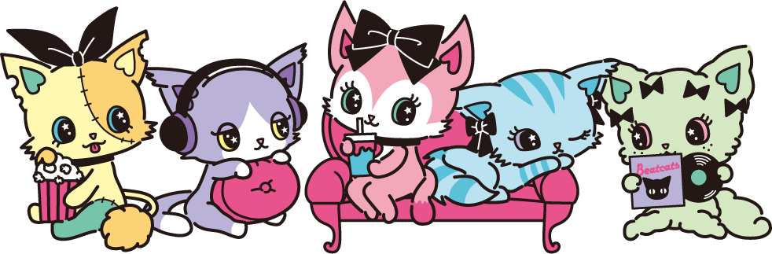

About BEATCATS
ビートキャッツ
There are many things that cause nerves to flare... like friends, a crush, or changes to your school schedule. When that happens, the 5 colorful Beatcats might appear!
The Beatcats feast on the colors born from the pitter-patter of human hearts!
They absorb the heart-pounding colors and convert them to energy they use to sparkle. And as thanks for the heart-pounding energy, they flood everyone with singing and dancing.
When there is not enough excitement, they transform into vampires, losing a bit of their colors. They gain their energy back by performing for their fans, which they refer to as "MEALS", therefore gathering more colors from the excitement inside their hearts and returning back to normal.
